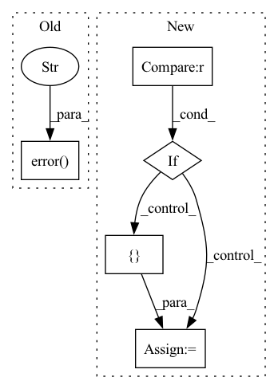

Pattern ID :27714
Before Change
self._create_tuple_ops(node, module_tensor_tuples_map, node_name_to_module, ops)
else:
if node.outputsSize() != 1:
logger.error("multiple output Ops are not supported %s" , str(node))
raise NotImplementedError
output_name: str = node.output().debugName()
After Change
if is_leaf_module(model):
return self._parse_single_module_model(model, trace.graph, ir_nodes_list)
if inputs_map is None :
inputs_map = {}
curr_inputs = [inp for inp in trace.graph.inputs()]
if higher_level_inputs is not None:
_update_inputs_map(curr_inputs, higher_level_inputs, inputs_map)
In pattern: SUPERPATTERN
Frequency: 3
Non-data size: 5
Instances Fragment ID: 82198403
Project Name: quic/aimet
Commit Name: 4f09ee7eded0de72f959a68889e02f89a53ad364
Time: 2020-11-18
Author: quic_klhsieh@quicinc.com
File Name: TrainingExtensions/torch/src/python/aimet_torch/meta/connectedgraph.py
M Class Name: ConnectedGraph
N Class Name: ConnectedGraph
M Method Name: _parse_trace_graph(7)
N Method Name: _parse_trace_graph(5)
M Parent Class: AimetCommonConnectedGraph
N Parent Class: AimetCommonConnectedGraph
M File Name: TrainingExtensions/torch/src/python/aimet_torch/meta/connectedgraph.py
N File Name: TrainingExtensions/torch/src/python/aimet_torch/meta/connectedgraph.py
M Start Line: 239
M End Line: 309
N Start Line: 260
N End Line: 318
Before Change
f"Invalid data type for JAX: "{data_type}". Only float or double are supported."
)
else:
logger.error("Changing the data type is not supported for backend " , backend)
After Change
if backend == "torch":
_set_precision_torch(data_type)
elif data_type not in ["float", "double"] :
logger.error(
f"Invalid data type for {backend}: "{data_type}". Only float or double are supported."
)
elif backend == "jax":
from jax.config import config
config.update("jax_enable_x64", data_type == "double")
logger.info(f"JAX data type set to {data_type}")
elif backend in ["numpy", "tensorflow"]:
torchquad_default_dtypes[backend] = { "float": "float32", "double": "float64"} [
data_type
]
logger.info( Fragment ID: 82198399
Project Name: esa/torchquad
Commit Name: 6e4ecdbde059a8579eecaeda33ea46e00a92f353
Time: 2022-03-14
Author: ga84muv@mytum.de
File Name: torchquad/utils/set_precision.py
M Class Name: AnonimousClass
N Class Name: AnonimousClass
M Method Name: set_precision(2)
N Method Name: set_precision(2)
M Parent Class:
N Parent Class:
M File Name: torchquad/utils/set_precision.py
N File Name: torchquad/utils/set_precision.py
M Start Line: 67
M End Line: 81
N Start Line: 71
N End Line: 83
Before Change
else:
current_setting = tensor_quantizer.use_symmetric_encodings
if current_setting != quantizer_setting:
logger.error("Conflicting tensor quantizer settings for symmetric encodings" )
raise AssertionError("Conflicting tensor quantizer settings for symmetric encodings")
else:
if setting_name in [ConfigDictKeys.IS_INPUT_QUANTIZED, ConfigDictKeys.IS_OUTPUT_QUANTIZED]:
tensor_quantizer.enabled = quantizer_settingAfter Change
// Tensor quantizer"s setting has already been modified
if setting_name in [ConfigDictKeys.IS_INPUT_QUANTIZED, ConfigDictKeys.IS_OUTPUT_QUANTIZED]:
current_setting = tensor_quantizer.enabled
elif setting_name == ConfigDictKeys.IS_SYMMETRIC :
current_setting = tensor_quantizer.use_symmetric_encodings
else:
current_setting = { ConfigDictKeys.MIN: tensor_quantizer.encoding_min_max_fixed_vals[0],
ConfigDictKeys.MAX: tensor_quantizer.encoding_min_max_fixed_vals[1]}
log_with_error_and_assert_if_false(current_setting == quantizer_setting,
logger,
f"Conflicting tensor quantizer settings for {setting_name}")
else: Fragment ID: 82198397
Project Name: quic/aimet
Commit Name: 23f8abbb32da75a3ba3b8ea5a1a118337f831424
Time: 2023-04-10
Author: quic_klhsieh@quicinc.com
File Name: TrainingExtensions/torch/src/python/aimet_torch/quantsim_config/quantsim_config.py
M Class Name: AnonimousClass
N Class Name: AnonimousClass
M Method Name: _modify_tensor_quantizers(4)
N Method Name: _modify_tensor_quantizers(4)
M Parent Class:
N Parent Class:
M File Name: TrainingExtensions/torch/src/python/aimet_torch/quantsim_config/quantsim_config.py
N File Name: TrainingExtensions/torch/src/python/aimet_torch/quantsim_config/quantsim_config.py
M Start Line: 700
M End Line: 733
N Start Line: 703
N End Line: 743